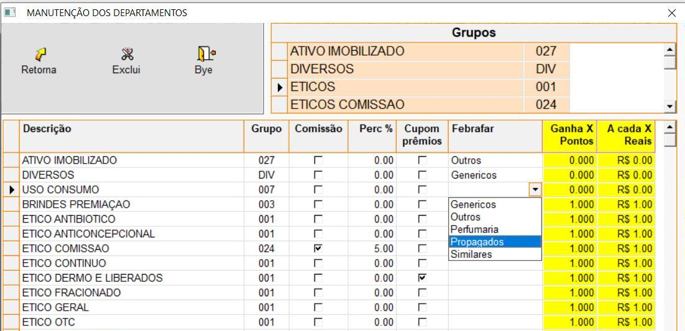
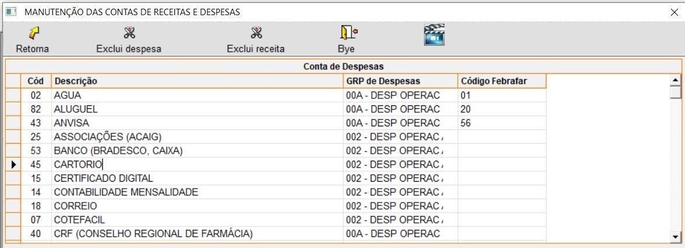
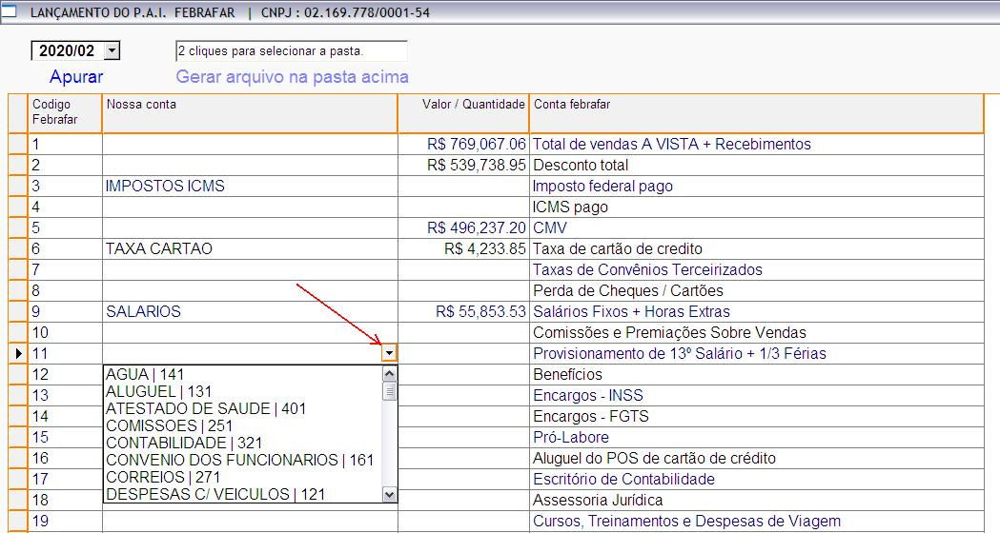

Cadastros
1º Departamentos
Menu Cadastros / Produtos / Departamentos
Identificar cada departamento à qual grupo Febrafar ele pertence :

2º Contas de Despesas
Menu Cadastros / Despesas e Receitas / Contas
Identificar cada conta à qual conta Febrafar ela pertence
Obs.: Este processo poderá ser realizado também, direto na tela de apuração.

Apuração
Menu Utilitários / Exporta dados / Febrafar (PAI)
- Verifique se as contas de despesa (Nossa conta) estão devidamente classificadas, e caso falte classificar ou encontre uma conta classificada incorretamente, basta selecionar a conta desejada (conforme a imagem abaixo) para atualizar.
- Selecione o período (ANO/MÊS) e clique em “APURAR”.
- Após o sistema exibir todas as informações lançadas no período, será exibida a opção para gerar o arquivo.
- Após conferir tudo, lançar os valores faltantes (m², colaboradores), selecione onde quer gravar o arquivo e clique em “Gerar arquivo...”
